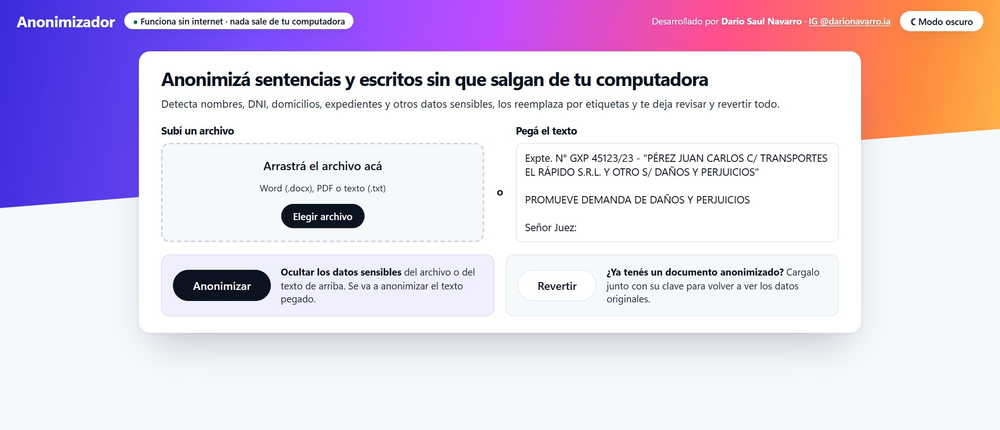

Anonimizás en tu computadora
Cargás el Word, el PDF o pegás el texto. Revisás lo que se detectó y guardás la clave para revertir.
TEXTO ANONIMIZADO[PERSONA 1], DNI [DNI 1], domiciliado en [DOMICILIO 1]…
El Anonimizador reemplaza nombres, DNI, domicilios y expedientes por etiquetas antes de que el texto llegue a ChatGPT, Claude o Gemini. Cuando la IA responde, recuperás los datos reales con un clic.
Expte. N° GXP 45123/23[EXPEDIENTE 1] — Juan Carlos Pérez[PERSONA 1], DNI N° 28.456.789[DNI 1], con domicilio real en calle Junín 1456[DOMICILIO 1], teléfono (0379) 4431256[TELÉFONO 1], promueve demanda contra Transportes El Rápido S.R.L.[ORGANIZACIÓN 1] y contra Ramón A. Skrzypczak[PERSONA 2]…
Cómo se usa con IA
Pedile a la IA que resuma, analice o redacte con el texto anonimizado. Ella responde usando las mismas etiquetas, y vos las convertís de nuevo en los datos reales.
Cargás el Word, el PDF o pegás el texto. Revisás lo que se detectó y guardás la clave para revertir.
Copiás el texto con etiquetas y le pedís lo que necesites. La IA nunca recibe un nombre ni un número real.
Pegás la respuesta en "Revertir", cargás tu clave y los datos reales vuelven a su lugar. También funciona con el Word anonimizado.
Capturas de la aplicación
Todas las capturas usan una demanda con datos ficticios.

Pantalla de inicio: elegís un archivo o pegás el texto, y tocás "Anonimizar".
Seguridad
El Anonimizador es un único archivo que se abre en el navegador. Todo el procesamiento ocurre en tu equipo.
La aplicación tiene bloqueado por diseño cualquier envío de datos a la red. Podés desconectar el wifi y funciona igual.
La relación entre etiquetas y datos reales se guarda en un archivo que solo vos tenés. Podés protegerlo con contraseña.
No hay registro, no hay usuario y no hay base de datos. No existe ningún lugar remoto donde tus documentos puedan quedar guardados.
Dónde están tus datos
Qué detecta
Reconoce los formatos que aparecen en un expediente real: DNI con puntos, CUIT con guiones, dominios viejos y nuevos, matrículas, tomos y folios.
PERSONAPersonas
ORGANIZACIÓNEmpresas y organizaciones
DNIDNI y documentos
CUITCUIT / CUIL
DOMICILIODomicilios
TELÉFONOTeléfonos
EMAILCorreos electrónicos
CBUCBU, alias y cuentas
PATENTEPatentes
MATRÍCULAMatrículas, tomos y folios
EXPEDIENTENúmeros de expediente
NACIMIENTOFechas de nacimiento
INMUEBLEDatos catastrales
ORGANISMOJuzgados y comisarías
LUGARLocalidades
Gratis.Sin suscripción · sin límite de documentos
Es un solo archivo. Funciona en Windows y Mac con Chrome o Edge, y lo podés compartir con tu equipo.
Archivo: Anonimizador.html · 1,9 MB
La clave contiene los datos originales. Guardala aparte y nunca la mandes junto con el documento anonimizado.
Ninguna detección automática es infalible. Por eso la aplicación resalta todo y te deja corregir antes de descargar.
Si el PDF es una imagen escaneada no se puede leer el texto. En ese caso usá el Word original.
Guardalos antes como .docx desde Word y después cargalos en el Anonimizador.